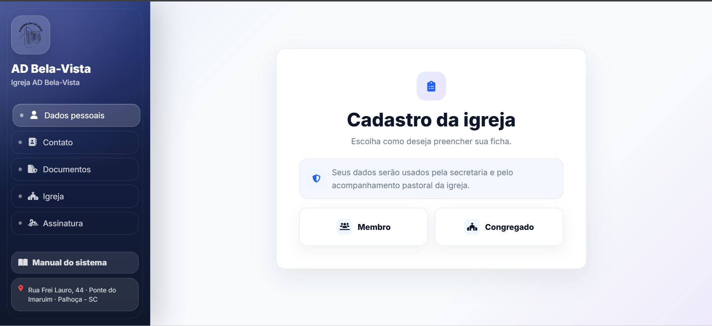

Use quando a pessoa vai preencher a ficha completa, com dados pessoais, ministeriais, familiares, documentos e assinatura.
Manual da ficha
Como preencher sua ficha de cadastro.
Este guia explica somente o preenchimento da ficha pública da AD Bela-Vista: aceite de privacidade, escolha do tipo de cadastro, dados obrigatórios, anexos, assinatura e envio.
Visão geral
O caminho da ficha

Depois da privacidade
Escolha o tipo de cadastro
Use quando o cadastro deve ser mais enxuto, com os dados essenciais para identificação e contato.
Escolha o tipo antes de começar. O formulário muda conforme a opção selecionada.
Os dados são usados apenas para cadastro, acompanhamento e organização interna da igreja.
Preenchimento
Campos importantes
Nome: informe o nome completo, sem abreviar.
Documento: informe CPF ou CRNM, conforme o tipo de documento.
Celular: coloque DDD e número atualizado, pois ele pode ser usado para contato.
Endereço: confira CEP, bairro, rua, cidade e estado antes de avançar.
Igreja: preencha setor, congregação, forma de recebimento e informações ministeriais quando aparecerem.
Anexos
Fotos e documentos
Formatos aceitos
Use imagem JPG, PNG, WEBP ou arquivo PDF. Evite fotos borradas, cortadas ou com pouca luz.
Tamanho
Cada anexo deve ter no máximo 6 MB. Se estiver grande, tire uma nova foto mais leve ou reduza o arquivo.
Documento legível
Confira se nome, número e foto do documento aparecem com clareza antes de enviar.
Comprovantes
Quando solicitado, envie certidão, diploma ou comprovante em arquivo claro e completo.
Finalização
Assinatura e envio
Leia a declaração antes de assinar.
Assine dentro do espaço indicado, usando mouse, dedo ou caneta touch.
O aceite de privacidade já foi feito antes de iniciar a ficha.
Revise as informações e envie o cadastro.
Dúvidas rápidas
Antes de enviar
Posso deixar campo obrigatório vazio?
Não. O sistema vai destacar o campo que precisa ser preenchido.
Preciso aceitar os termos de privacidade?
Sim. O aceite aparece antes da escolha do tipo de cadastro e é obrigatório para iniciar a ficha.
O que acontece depois do envio?
A ficha fica registrada para conferência interna da igreja. Se houver necessidade, a equipe autorizada poderá entrar em contato.
Posso preencher outra ficha?
Sim. Após a tela de sucesso, use a opção de novo cadastro quando precisar.